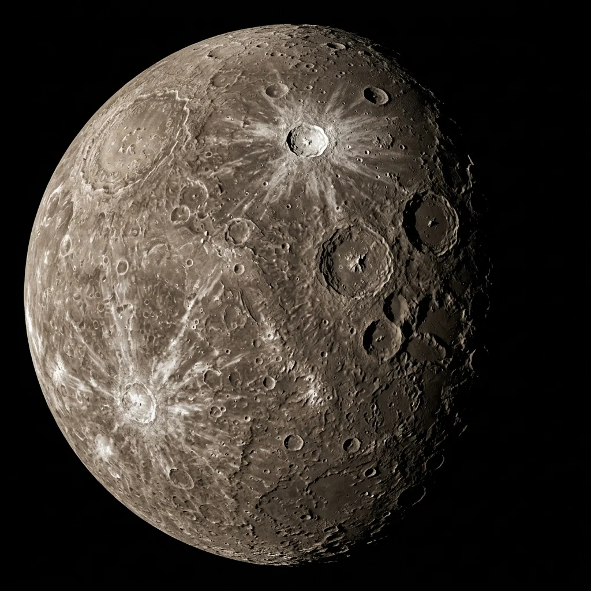

Caloris Basin
A 1,550 km-wide impact basin ringed by 2 km mountains—so huge that shockwaves focused on the opposite side of Mercury created chaotic terrain.
Solar system voyage · Stop 1 of 10
A cratered world races around the Sun. Look for the scars that remain when almost no atmosphere erases them.
0.39 AU from the Sun · mean distance, rounded
Investigate the sunlight
Spacecraft-inspired view. Images are not a live view; sizes and star positions are not to scale. Select an image to examine it with the class.
Predict first: move twice as far from the Sun. How much light reaches the same area?
distance from the Sun
sunlight per m², compared with Earth
one-way light travel from the Sun
1 AU ≈ 150 million km. Model: sunlight ∝ 1 / distance²; light takes about 8.32 minutes per AU. These are Sun-to-location values, not Earth-to-spacecraft communication times. Atmospheres, temperature, and orbital eccentricity are not modeled. NASA solar system reference · NASA planetary distance table.
Why can the closest planet to the Sun still have an extremely cold night?
Without a substantial atmosphere to redistribute and retain heat, the surface loses energy during its long night.
Explain your answer using one observation from the image or lesson and one measurement from the sunlight experiment.
Planet Field Guide · Stop 1 · Terrestrial World
Racing around the Sun every 88 Earth days, Mercury is the smallest major planet yet one of the densest. Without a blanket of air to store heat or weather away impact scars, its ancient crust preserves a four-billion-year record of violent collisions and planetary contraction.
Driving question: Why does a single solar day (sunrise to sunrise) on Mercury last two full Mercury years?
Interactive Lab · Spin-Orbit Resonance
Solar tides locked Mercury into a 3:2 spin-orbit resonance: it spins on its axis 3 times for every 2 orbits around the Sun. Follow the orange surface marker for 2 full orbits to see why sunrise to sunrise takes 176 Earth days—and watch surface temperature swing 610 °C between noon and midnight.
High Noon (scorching)
Interior Structure
Select each layer to inspect how Mercury’s massive iron core compares with its rocky mantle and crust.
Surface Geology
A 1,550 km-wide impact basin ringed by 2 km mountains—so huge that shockwaves focused on the opposite side of Mercury created chaotic terrain.
Towering cliffs up to 3 km tall formed as Mercury’s huge iron core cooled and shrank, crumpling the planet’s radius by about 7 km.
Because Mercury’s tilt is nearly 0°, deep craters at its poles never see sunlight—preserving pockets of water ice despite scorching equatorial days.
Spacecraft Exploration
Check Your Understanding
1. What evidence shows Mercury shrank by several kilometers as it cooled?
Choose an answer.
2. Why can water ice survive in polar craters on the closest planet to the Sun?
Choose an answer.